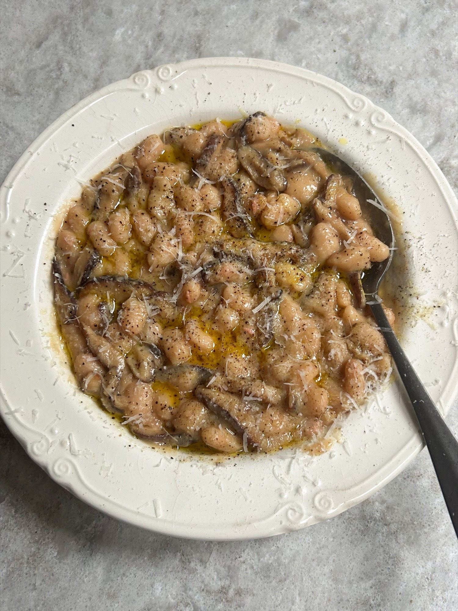

Miso Mushroom Beanotto
White beans cooked risotto-style in a miso and mushroom sauce, finished with Parmesan.

Ingredients
Method
- Melt the 30g butter in a large pan over a medium heat.
- Fry the 250-300g mushrooms for roughly 5 minutes, until browned.
- Add the 570g jar of white beans with their bean stock.
- Fill the empty jar a quarter full with water, swirl it around and add that to the pan too.
- Stir everything together and cook for 4-5 minutes, until the beans are warmed through.
- Stir in the 1 heaped tbsp miso and cook for a further minute, until the sauce is rich and glossy. Add a splash of water to loosen it if necessary.
- Just before serving, stir through the 45g grated Parmesan and a few cracks of black pepper.
- Spoon into bowls and finish with extra Parmesan and a drizzle of olive oil.
- Serve with crusty bread, if you like.
Notes
- The source suggests leaving out the Parmesan for a vegan version; the butter would need swapping for a plant-based alternative too.
Source: https://boldbeanco.com/blogs/beanspo-recipes/mushroom-miso-beanotto